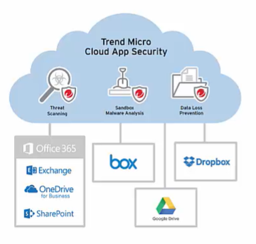

Advanced Threat Detection:
- Finds zero-day and hidden threats
- Sandboxing and machine learning for malware, phishing, and business email compromisse, and data leak
Simple API Integration
- Automatic setup
- No impact to funcionalidade do user/admin
- Suporta todos os dispositivos, em todo lugar
Niveis de Bloqueio de virus e afins:
Como eles aumentam a segurança do Office 365?
- Business email context (hard to detect/ use machine learning) and internal email protection (sandboxing)
- Manual scan- For mail Store(email/ server services/ know damage) and file sharing services
- Sanbox